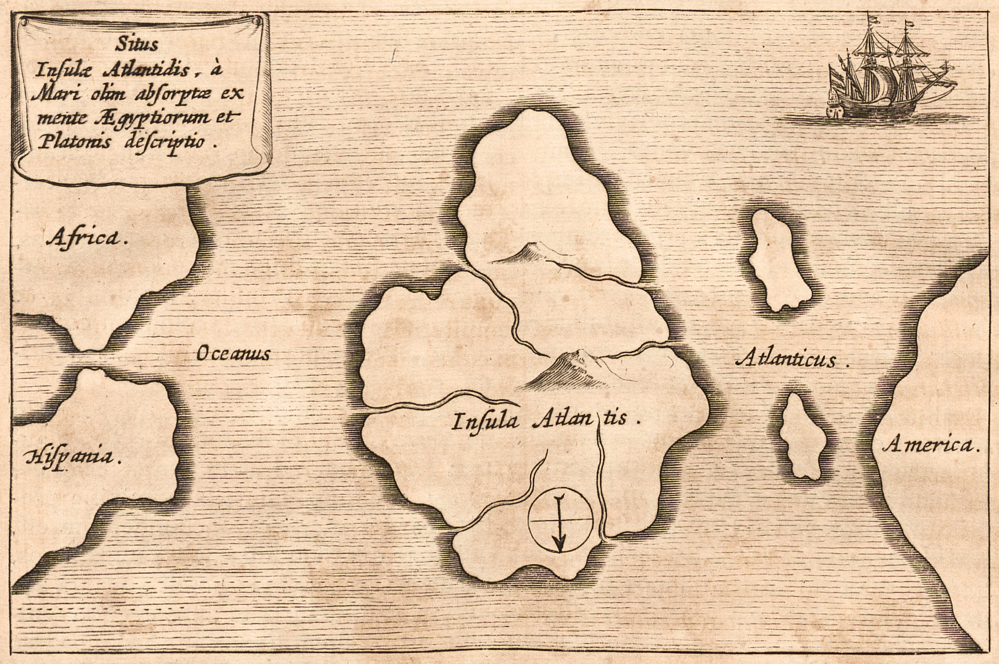
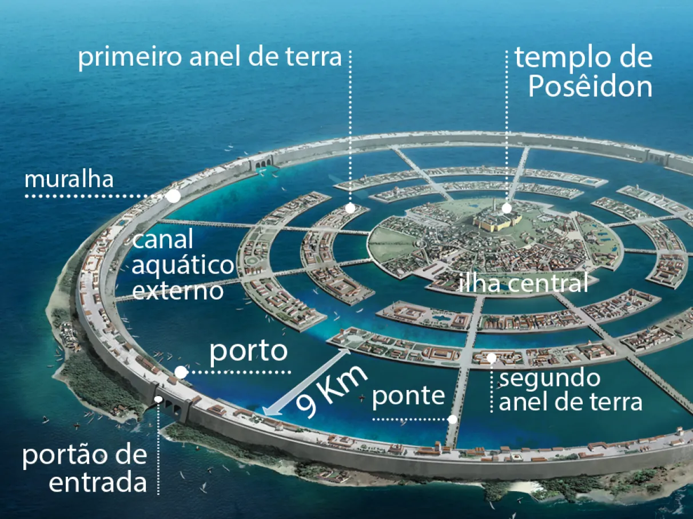
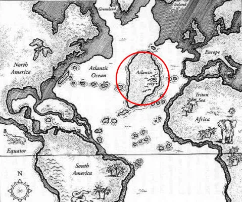
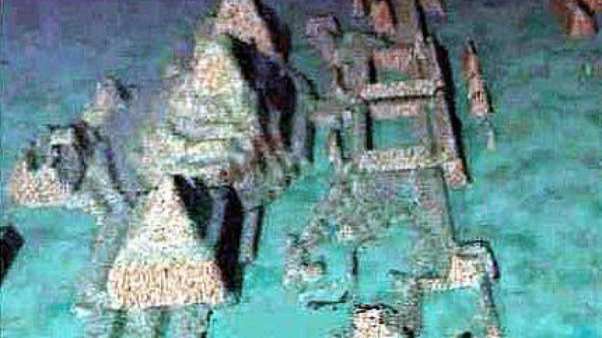

A Atlântida é uma lendária ilha ou continente cuja primeira menção conhecida remonta a Platão em suas obras "Timeu" e "Crítias". Segundo o filósofo grego, a Atlântida era uma potência naval situada "além das Colunas de Hércules" (Estreito de Gibraltar) que conquistou muitas partes da Europa Ocidental e África por volta de 9.600 a.C. Após uma tentativa fracassada de invadir Atenas, a Atlântida teria afundado no oceano "em um único dia e noite de infortúnio".
A Lenda da Atlântida
A História Segundo Platão
Nos diálogos de Platão, a Atlântida é descrita como uma civilização avançada e próspera que existiu cerca de 9.000 anos antes de sua época. A ilha era maior que a Líbia e a Ásia Menor juntas, localizada no Oceano Atlântico. A capital da Atlântida era uma maravilha da arquitetura e engenharia, com anéis concêntricos de água e terra, pontes, templos magníficos e estátuas de ouro.
Governo e Sociedade
A Atlântida era governada por uma confederação de dez reis, descendentes do deus Poseidon. A sociedade era altamente organizada, com leis escritas, exército poderoso e florescente comércio. Os atlantes dominavam tecnologias avançadas para a época, incluindo metalurgia complexa e sistemas de irrigação.
Queda da Civilização
Segundo Platão, os atlantes inicialmente eram virtuosos, mas com o tempo tornaram-se corruptos e ambiciosos. Zeus, percebendo sua decadência moral, decidiu puni-los. Em um único dia e noite de cataclismo, terremotos e inundações afundaram a Atlântida no mar, desaparecendo para sempre.
Teorias Sobre a Localização
Ao longo dos séculos, numerosas teorias foram propostas sobre a possível localização da Atlântida. Algumas das principais incluem:
Hipótese do Mediterrâneo
Alguns pesquisadores acreditam que a Atlântida poderia estar no Mar Egeu, associando-a com a erupção vulcânica de Santorini (c. 1600 a.C.) que destruiu a civilização minoica. A sofisticação dos minoicos e o cataclismo que os atingiu apresentam paralelos com a história de Platão.
Hipótese do Atlântico
Outros defendem que a Atlântida realmente existiu no meio do Oceano Atlântico, possivelmente associada aos Açores ou às ilhas Canárias. Evidências geológicas sugerem que partes do Atlântico podem ter sido expostas durante a última era glacial.
Expedições Modernas
Nas últimas décadas, várias expedições tentaram encontrar evidências da Atlântida utilizando tecnologia moderna. Desde sonares de alta resolução até satélites, arqueólogos e exploradores vasculharam os oceanos em busca da civilização perdida.
Descobertas Promissoras
Em 2001, estruturas submersas que lembravam construções humanas foram encontradas perto de Cuba. Em 2011, um suposto "complexo de pirâmides" foi identificado no fundo do oceano próximo aos Açores. No entanto, nenhuma dessas descobertas foi conclusivamente confirmada como sendo a Atlântida.
Curiosidades
A lenda da Atlântida inspirou inúmeras obras de ficção, teorias pseudocientíficas e até movimentos esotéricos. Algumas curiosidades sobre esse fascinante mito:
- O nome "Atlântida" significa "ilha de Atlas" (o titã que sustentava os céus)
- Os nazistas acreditavam que os atlantes eram uma raça ariana superior
- Edgar Cayce, um famoso psíquico, fez várias "previsões" sobre a Atlântida
- Alguns associam a Atlântida com o Triângulo das Bermudas
- A Disney produziu um filme de animação sobre a Atlântida em 2001